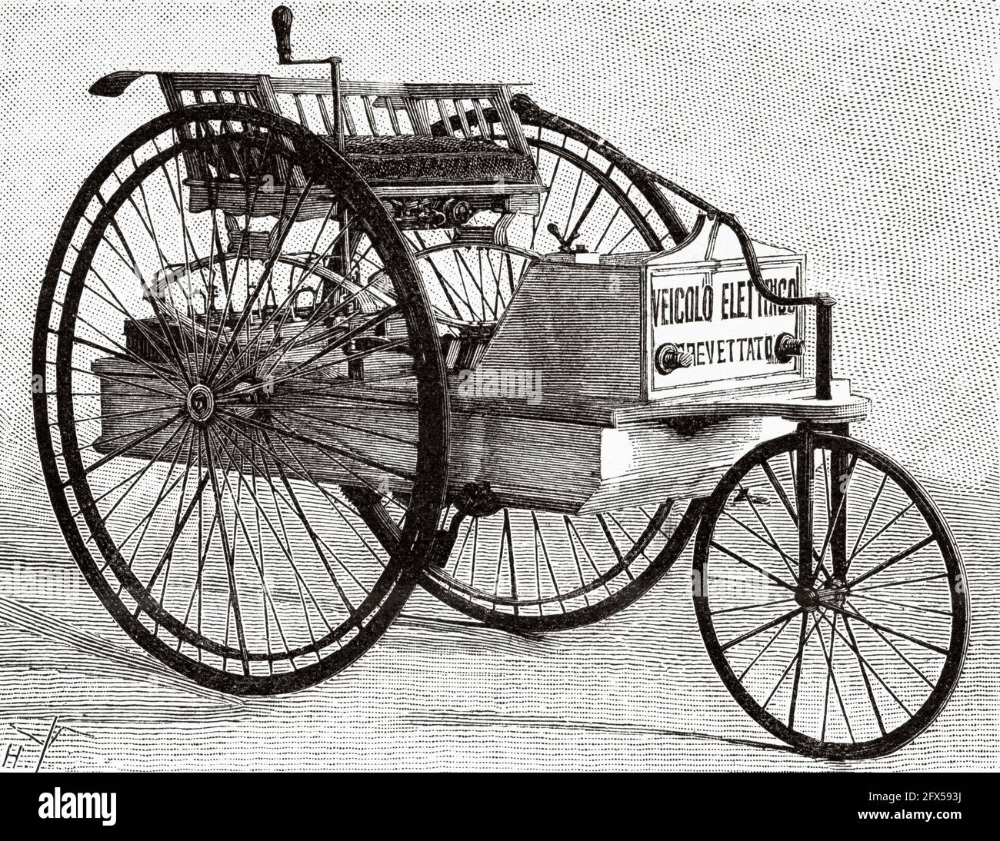

Electric Model Cars:
The invention of the first model electric vehicle is attributed to various people.
In 1828, the Hungarian priest and physicist Ányos Jedlik invented an early type of electric motor,
and created a small model car powered by his new motor. Between 1832 and 1839,
Scottish inventor Robert Anderson also invented a crude electric carriage.
In 1835, Professor Sibrandus Stratingh of Groningen, the Netherlands and his assistant
Christopher Becker from Germany also created a small-scale electric car, powered by non-rechargeable primary cells.
Electric locomotives:
In 1834, Vermont blacksmith Thomas Davenport built a similar contraption which operated on a short,
circular, electrified track.[10] The first known electric locomotive was built in 1837, in Scotland by
chemist Robert Davidson of Aberdeen. It was powered by galvanic cells (batteries). Davidson later built
a larger locomotive named Galvani, exhibited at the Royal Scottish Society of Arts Exhibition in 1841.
The 7,100-kilogram (7-long-ton) vehicle had two direct-drive reluctance motors, with fixed electromagnets
acting on iron bars attached to a wooden cylinder on each axle, and simple commutators. It hauled a load of 6,
100 kilograms (6 long tons) at 6.4 kilometres per hour (4 mph) for a distance of 2.4 km (1.5 miles).
It was tested on the Edinburgh and Glasgow Railway in September of the following year, but the limited
power from batteries prevented its general use. It was destroyed by railway workers, who saw it as a
threat to their security of employment.[11][12][13][14]
A patent for the use of rails as conductors of electric current was granted in England in 1840,
and similar patents were issued to Lilley and Colten in the United States in 1847.
The first battery rail car was used in 1887 on the Royal Bavarian State Railways.